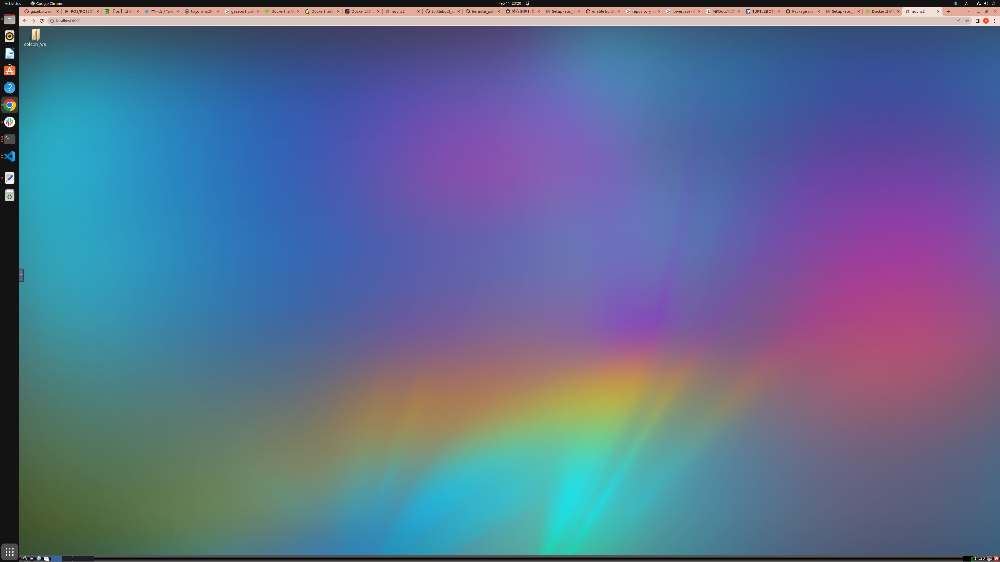
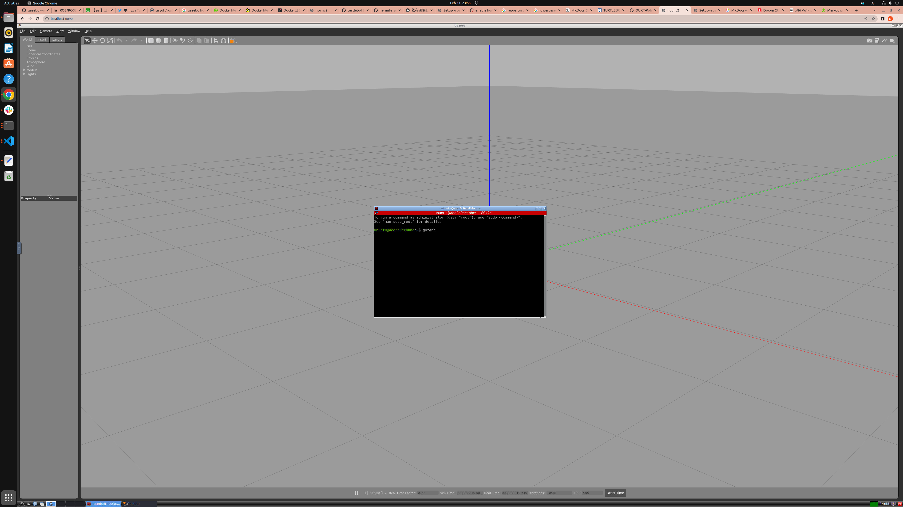

セットアップ方法#
本教材では、トラブルを避けるためDockerで環境構築を行ないます。 そのため、事前にDockerのインストールを済ませておいてください。
Dockerのインストール手順はこちら WindowsでのDockerのインストール手順はこちら
Note
Dockerはインストール直後だとsudoをつけないと動かないです。 インストール後必ず以下のコマンドを実行し、パソコンの再起動を行なってください。
sudo gpasswd -a $USER docker
以下のコマンドを入力して
docker run hello-world
Hello from Docker!を含む出力が得られていればDockerのインストールは正常に完了しています。
Warning
本教材を執筆するにあたって筆者が使用している環境はUbuntu22.04です。
Dockerが動けば他のOSでも動く可能性はあるとは思います。
ただしM1 Macなどの非x86系CPUの上だと多分動かないです。
Dockerはソフトウェアの動作似必要なライブラリ群を1つにまとめ、共有できる仕組みです。
あたかも仮想マシンのように(厳密にはコンテナ仮想化といいます)振る舞い、docker pullやdocker runといったコマンドを叩くだけでかんたんに環境を再現できます。
このとき、動作環境に必要なファイルを1つにまとめたものを「Docker Image」、そのファイルから作られた動作環境のことを「Docker Container」といいます。
1つのDocker Imageから複数のDocker Containerを作って同時に動かすことも可能です。
Docker Imageが本体、Docker Containerが分身という関係性あると考えるとわかりやすいかもしれません。
Docker Imageの起動#
Docker Imageはgithub actionsというツールを使用して自動的にビルドされgithub container registryにおいてあります。 そのためビルドする必要はありません。 github actionsはgithubで開発を行なうときに使用できる非常に強力なCI/CDツールで皆さんの競技活動、研究活動を大きく効率化してくれますので、付録に使い方を載せておきます。
docker run --rm -p 6080:80 --shm-size=4096m --security-opt seccomp=unconfined ghcr.io/ouxt-polaris/ros_handson/ros_handson:latest
ブラウザで以下のURLを開いてください http://127.0.0.1:6080/ VNCが立ち上がるので、ブラウザからDocker Conteiner内部の環境にアクセスできます。

こちらの環境にはすでに必要なソフトウェアがインストールされていますので、vnc上でシェルを立ち上げます。
gazebo
立ち上げたターミナルに上記のコマンドを入力してみてください、するとgazeboが立ち上がります。

Warning
円滑な開催のため、ハンズオン会場に来られる前にここまでは必ず動作確認をお願いします。
今回はこの環境使ってハンズオンを進めていこうとおもいます。
VScode のインストール#
こちらはマストではありませんが、あれば非常に楽です。
今回のハンズオンでは基本的にVNC上で操作は完結しますが、Docker Containerに接続しデータをコピーしたりできるため、VSCode
およびDevContainer プラグインはあったほうが何かと便利かと思われます。